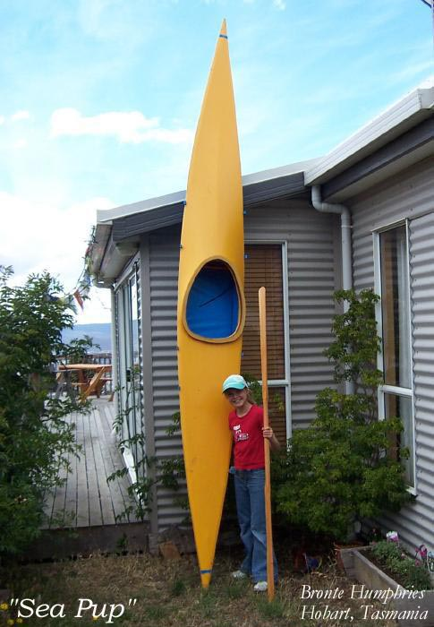

| Kayak Designs - Introduction | Menu Last Page Next Page |
|  |
The "Wood Frame Kayak Builders Manual" was written to provide builders with wood frame kayaks designed for good performance, ease of construction, and low cost. All folding kayaks in the "Folding Kayak Builders Manual" can be constructed as wood frame non-folders. Look at the "Gallery" of the wood frame manual to see many of the folding designs built this way. All designs, all plans, and all instructions in this manual are "free". Many of the designs are based on traditional Inuit (Greenland) and Aleut ( Baidarka) kayaks. The boats fall into four general categories.
1. Performance - Sea Rover, Sea Ranger, Sea Rider, Sea Raider, 2. Touring - Sea Cruiser, Sea Tour 13,15,17, Sea Otter, Nikumi, Yarra, Sea Bee 3. Children / Small Paddler - Sea Flea, Sea Pup, Sea Otter
Wood frame (non-folder) construction is approximately 65 hrs. with costs averaging $200.00. Use the {Back} key to return.
Folder Construction is of aluminum stringers, HDPE (plastic) cross sections, and a lightweight PVC skin. Construction time is approximately 100 hrs. with costs averaging $500.00US. Kayak assembly times are under 30 minutes. Use the {Back} key to return.
Inflatable / folder hybrid construction ( 4 sponsons / 3 aluminum stringers) is approximately 50hrs. with costs averaging $250.00. Assembly times average 10 minutes. Use the {Back} key to return. |